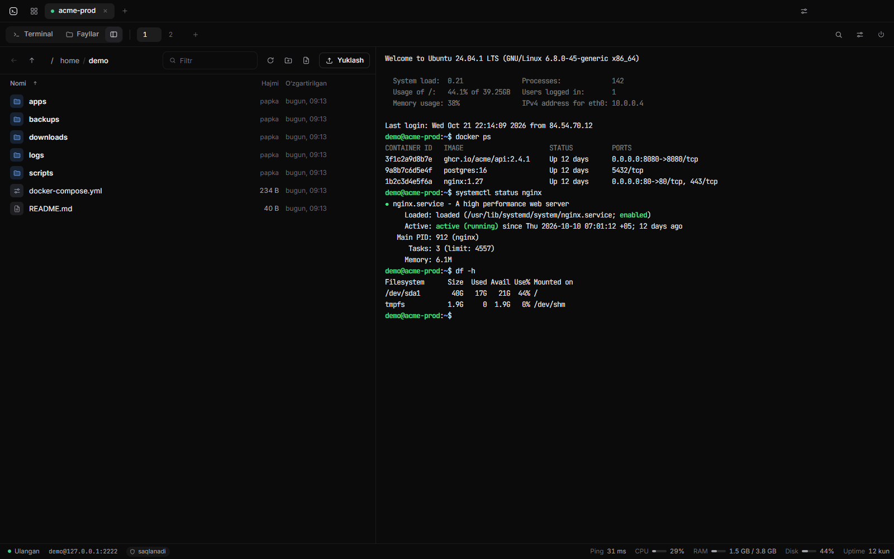
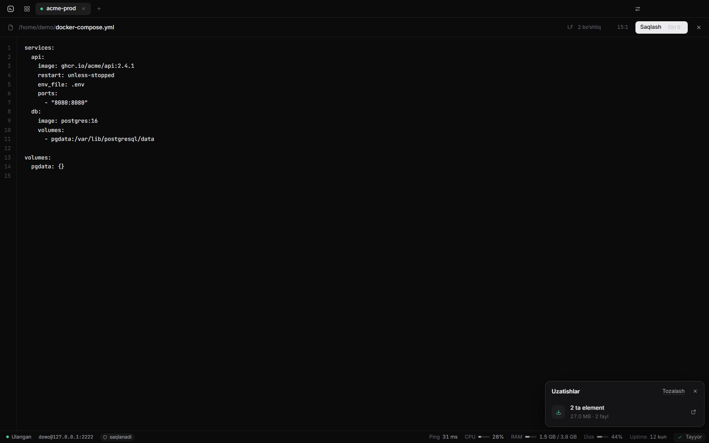
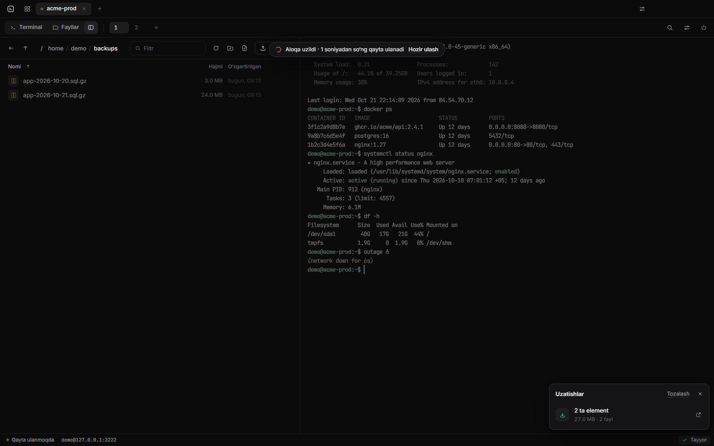
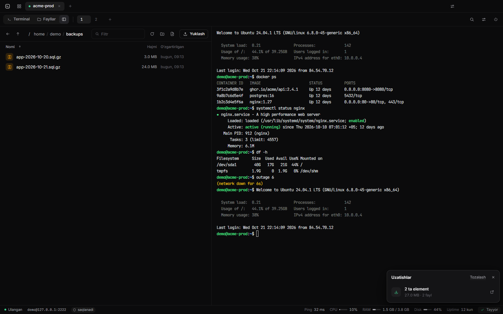
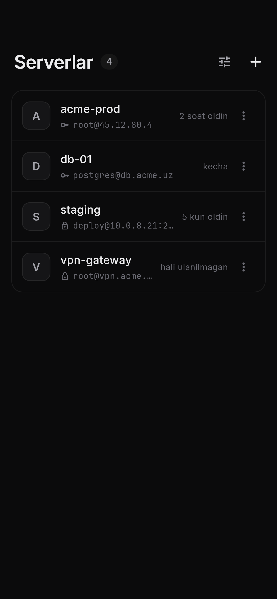
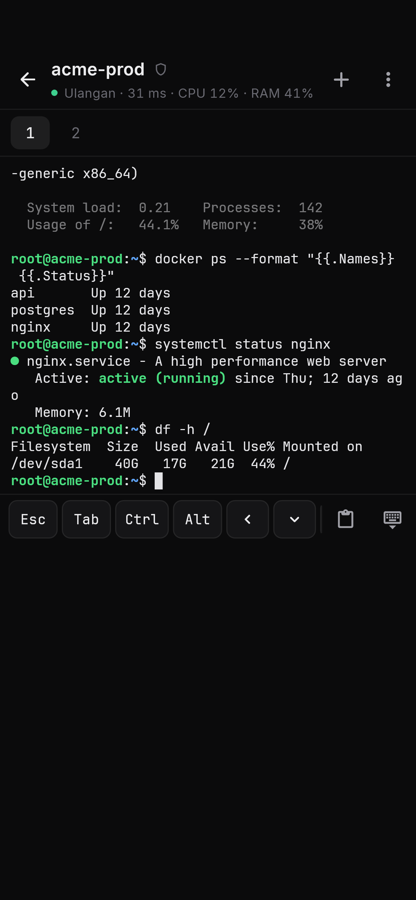
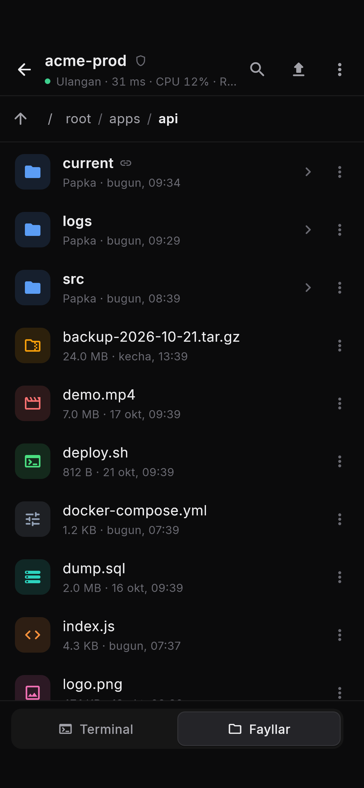

Pult
Serveringiz — bir joyda. Uzilishlarsiz.
Tanish holat
Internet uzildi — ish ham yo‘qoldimi?
Sessiya saqlanadi
(tmux)
.
Qayta ulanganda — aynan qolgan joyidan.
Pult bilan
Pult o‘zi qayta ulanadi.
ssh demo@acme-prod
acme-prod
Ulangan
demo@acme-prod
saqlanadi
Ping
32 ms
CPU
18%
RAM
1.5 GB / 3.8 GB
Aloqa uzildi · qayta ulanmoqda…
Windows
Hammasi bitta oynada.
01
Terminal
02
Fayllar (SFTP)
03
Muharrir
04
Yuklash uzilsa ham davom etadi




Android
Telefonda ham. O‘sha sessiya.

Serverlar

Terminal + qo‘shimcha tugmalar

Fayllar
Xavfsiz va ochiq
Parollar shifrlangan
Server kaliti tekshiriladi
Ochiq kod
(MIT)
Pult — bepul va ochiq kodli
Serveringiz — bir joyda. Uzilishlarsiz.
Windows · Android